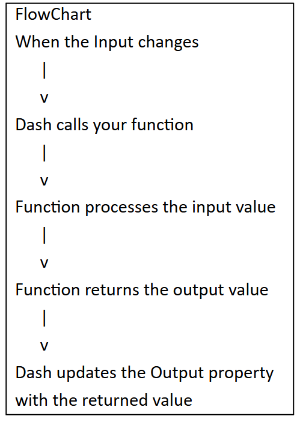
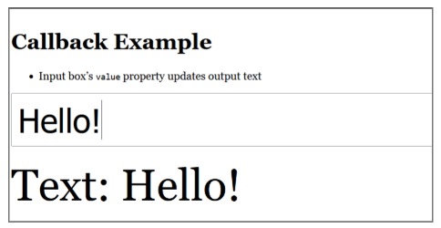
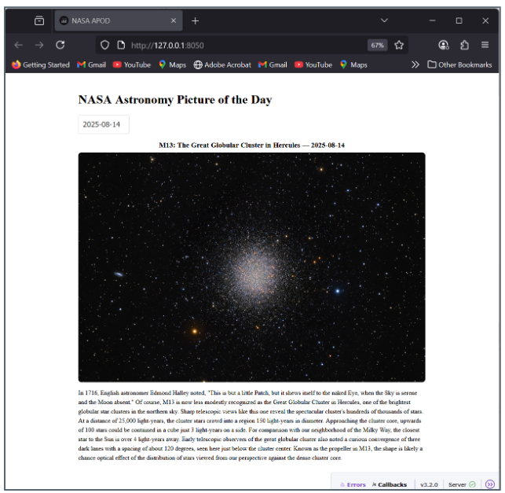

def function_name(inputs):
# process the input values
return outputs # return value(s) that update the output component(s)Writing Callbacks and Accessing APIs
This section explains how callbacks make Dash apps interactive and how to connect them to external APIs. A callback function automatically runs when a user changes an input — such as typing text or selecting a date — and updates outputs like graphs or images in real time. Using the @app.callback() decorator, students learn to link inputs and outputs, handle multiple components, and structure interactive workflows with Dash Core Components such as dcc.Input and dcc.DatePickerSingle.
The lesson concludes with a hands-on example using NASA’s Astronomy Picture of the Day (APOD) API. Students build a Dash app that lets users select a date, retrieves NASA’s image or video for that day using the requests library, and displays the title, media, and explanation. Through this exercise, students learn how to combine callbacks, APIs, and conditional logic to create dynamic, data-driven dashboards.
Callback Functions
A callback function in Python is a function that is automatically executed in response to a specific event or change. In Dash, callback functions link inputs and outputs — when an input component’s property changes (for example, a dropdown selection or slider value), the callback runs automatically to update the output component (such as a graph or text display).
Think of callbacks as the nervous system of your Dash app: the layout defines what the user sees; callbacks define how the app responds to what the user does.
“If the user changes the dropdown, automatically run the callback function to update the graph.”
The basic structure of a callback function:
The data flow is always:
Input component property → callback function runs → Output component property updated
Callbacks in Dash: The Basics
# Callback syntax template
from dash import Input, Output
@app.callback(
Output(component_id, component_property), # where to send the result
Input(component_id, component_property) # what triggers the function
)
def function_name(input_object):
# process the input
return output_object # must match the Output(s) declared aboveBreaking down the parts:
@app.callback— the decorator that registers this function as a callback. It tells Dash: “when the Input changes, run the function below and send the return value to the Output.”Input— specifies which component and which property will trigger the function when it changes.Output— specifies which component and which property should be updated with the function’s return value.component_id— theidstring you assigned to a layout component (e.g.,id="my-dropdown").component_property— a specific property of that component (e.g.,"value"for a dropdown,"children"for a Div,"figure"for a Graph).
The Callback Function

The function arguments correspond to the Inputs in order, and the return values correspond to the Outputs in order. If you have two Inputs, the function receives two arguments; if you have two Outputs, the function must return two values.
@app.callback(
Output("result-div", "children"), # first (and only) output
Input("my-input", "value") # first (and only) input
)
def update_result(user_input): # receives Input value as argument
processed = user_input.upper() # do something with it
return processed # returned value goes to OutputMultiple Inputs and Outputs
A single callback can handle multiple inputs and outputs:
- Multiple Inputs — the function runs whenever any of the listed inputs change. The arguments arrive in the same order the Inputs are declared.
- Multiple Outputs — return a tuple or list with one value per Output, in the same order they are declared.
@app.callback(
[Output('graph', 'figure'), # output 1: update the chart
Output('summary', 'children')], # output 2: update the text summary
[Input('dropdown', 'value'), # input 1: dropdown selection
Input('slider', 'value')] # input 2: slider position
)
def update_dashboard(selected_category, slider_value):
# arguments match Input order: selected_category ← dropdown, slider_value ← slider
fig = make_figure(selected_category, slider_value)
text = f"Showing: {selected_category} | Threshold: {slider_value}"
return fig, text # return values match Output orderDash Core Components (dcc)
dcc (Dash Core Components) is a module providing interactive UI elements that users can manipulate to trigger callbacks. Common components include:
| Component | Purpose | Key property |
|---|---|---|
dcc.Input |
Text or number input box | value |
dcc.Dropdown |
Select from a list | value |
dcc.Slider |
Numeric range selector | value |
dcc.DatePickerSingle |
Pick a single date | date |
dcc.Graph |
Plotly chart container | figure |
dcc.Interval |
Trigger callbacks on a timer | n_intervals |
Callback Example

The complete app below creates a text input box whose value is mirrored in real time to a large display Div — the simplest possible demonstration of a callback in action.
# callback_example.py
from dash import Dash, html, dcc, Input, Output, callback
app = Dash(__name__)
app.title = "Callback Example"
app.layout = html.Div(
style={"maxWidth": 900, "margin": "40px auto", "fontFamily": "Georgia, serif"},
children=[
html.H1("Callback Example"),
html.Ul([
html.Li(["Input box's ", html.Code("value"), " property updates output text"])
]),
dcc.Input(
id="text-in", # ID used in the callback Input()
type="text",
placeholder="type here…",
style={"width": "100%", "fontSize": "48px", "padding": "8px"},
),
html.Div(id="text-out", # ID used in the callback Output()
style={"fontSize": "64px", "marginTop": "20px"}),
],
)
@callback(
Output(component_id="text-out", component_property="children"),
Input(component_id="text-in", component_property="value")
)
def show_text(value):
return f"Text: {value or ''}" # value or '' prevents an error when the box is empty
if __name__ == "__main__":
app.run(debug=True)dcc.Input
dcc.Input renders an HTML input box inside your app. The most important property is value — it holds whatever the user has typed and is what you connect to a callback.
dcc.Input(
id="text-in", # unique ID for callback wiring
type="text", # "text", "number", "password", "email", etc.
placeholder="type here…",
debounce=False, # if True, only fires callback when user presses Enter or clicks away
style={"width": "100%", "fontSize": "48px", "padding": "8px"},
)children is the default first positional argument for dash.html components, so html.Div("Hello") is equivalent to html.Div(children="Hello"). You can omit children= when passing it as the first argument.
Connecting the dcc to the Callback
@callback(
Output("text-out", "children"), # update the text inside the Div with id="text-out"
Input("text-in", "value") # trigger when the value of the Input with id="text-in" changes
)
def show_text(value):
return f"Text: {value or ''}"Breaking this down:
@callback(...)— registers the function. Whentext-in’svaluechanges, runshow_textand send the return value totext-out’schildren.Output("text-out", "children")—"text-out"is the component to update;"children"is its text content property.Input("text-in", "value")—"text-in"is the component to watch;"value"is the property that changes when the user types.value or ''—valueisNonewhen the input box is empty (the user has not typed anything). Theor ''pattern safely substitutes an empty string, preventing errors from calling.upper()or other string methods onNone.
You do not need to write component_id= and component_property= explicitly. Dash accepts positional arguments: Output("text-out", "children") is equivalent to Output(component_id="text-out", component_property="children"). Positional syntax is more concise and more commonly seen in practice.
Callbacks Lab
1. What is a decorator in Python, and what does @app.callback() specifically tell Dash to do? Explain the data flow in plain language from the moment a user changes an input to the moment the output updates.
Show Answer
A decorator is a function that wraps another function to extend or modify its behavior — the @ syntax is Python shorthand for applying it. @app.callback() registers the function below it with Dash’s reactive framework. In plain language: when Dash starts, it reads all decorated callback functions and builds an internal map of which inputs are connected to which outputs. When a user changes an input component (e.g., types in a text box), Dash detects the change, collects the current values of all declared Input properties, calls the decorated function with those values as arguments, and takes the return value(s) and assigns them to the declared Output property or properties — updating the page immediately without a full browser reload.
2. A callback has two Input components and two Output components. Write the decorator and function signature only (no body) to wire: Input 1 = dcc.Dropdown with id="region-dd" and property "value"; Input 2 = dcc.Slider with id="year-slider" and property "value"; Output 1 = dcc.Graph with id="sales-chart" and property "figure"; Output 2 = html.Div with id="summary-text" and property "children".
Show Answer
@app.callback(
Output("sales-chart", "figure"),
Output("summary-text", "children"),
Input("region-dd", "value"),
Input("year-slider", "value")
)
def update_dashboard(selected_region, selected_year):
...The function receives two arguments in the same order as the Input declarations: selected_region ← "region-dd", selected_year ← "year-slider". It must return two values in the same order as the Output declarations: figure first, children second. Returning them in the wrong order will silently assign the wrong value to the wrong component.
3. Why does the pattern value or "" (or value or 0) appear so often in Dash callback functions? What happens if you skip this guard and call .upper() on a None value?
Show Answer
When a dcc.Input box is empty, Dash passes None as the argument — not an empty string or zero. None is not a string or a number, so any string or arithmetic operation on it raises an error. value or "" uses Python’s short-circuit evaluation: if value is None (falsy), the expression evaluates to "" (the right-hand side). If value is a non-empty string (truthy), the expression evaluates to value unchanged. Without this guard, calling None.upper() raises AttributeError: 'NoneType' object has no attribute 'upper' — crashing the callback and causing the output component to display a generic “Callback error” message in the browser rather than updating correctly.
Making a Callback Using NASA’s API
Overview
The goal is to build a Dash app that connects to NASA’s Astronomy Picture of the Day (APOD) API, letting users pick a date and instantly see the image or video NASA published for that day, along with its title and description.
APOD is a free, public API — no sign-up required for testing with the DEMO_KEY, though the demo key has rate limits (30 requests/hour). For heavier use, register for a free key at api.nasa.gov.
Imports and Constants
import datetime as dt
import requests
from dash import Dash, html, dcc, Input, Output, exceptions
API_KEY = "DEMO_KEY" # replace with your own for higher rate limits
APOD_URL = "https://api.nasa.gov/planetary/apod"
MIN_DATE = dt.date(1995, 6, 16) # first APOD was published June 16, 1995
TODAY = dt.date.today() # computed at runtime, not hardcoded
Setting the Layout
The layout defines what the user sees. Static in structure but contains placeholder components (identified by id) that callbacks will populate with live data.
app = Dash(__name__)
app.title = "NASA APOD"
app.layout = html.Div(
style={"margin": "0 auto", "padding": 20},
children=[
html.H1("NASA Astronomy Picture of the Day"),
# Date picker: user selects which date to view
dcc.DatePickerSingle(
id="apod-date",
min_date_allowed=MIN_DATE, # earliest valid date
max_date_allowed=TODAY, # cannot pick a future date
date=TODAY, # default selection: today
display_format="YYYY-MM-DD",
clearable=False, # prevent the user from clearing the date
),
# Spinner shown while media is loading; wraps the image/video placeholder
dcc.Loading(html.Div(id="media",
style={"marginTop": 16, "textAlign": "center"})),
# Placeholder for the text description
html.Div(id="caption"),
],
)Key layout components:
dcc.DatePickerSingle— renders a calendar date picker. Itsdateproperty (a string inYYYY-MM-DDformat) is what the callback listens to.dcc.Loading— wraps a component and shows a loading spinner automatically whenever a callback is updating that component.id="media"andid="caption"— these are empty placeholders; callbacks will fill them with content.
Making the Callback
@app.callback(
[Output("media", "children"), # will receive the image or video component
Output("caption", "children")], # will receive the explanation text
Input("apod-date", "date"), # triggers when the selected date changes
)The show_apod Function
def show_apod(date_str):
# Guard: if no date is selected, do nothing
if not date_str:
raise exceptions.PreventUpdate
# Convert the date string to a Python date object
# [:10] slices "2024-01-15T00:00:00" down to "2024-01-15"
try:
date_obj = dt.date.fromisoformat(date_str[:10])
except Exception:
return "Invalid date.", ""
# Build query parameters and call the API
params = {"api_key": API_KEY, "date": date_obj.isoformat()}
try:
r = requests.get(APOD_URL, params=params, timeout=10)
r.raise_for_status() # raises an exception if status code is not 200
data = r.json() # parse JSON response into a Python dictionary
except requests.RequestException as e:
return f"API error: {e}", ""What each part does:
exceptions.PreventUpdate— a special Dash exception that stops the callback from running without updating any outputs. Use this instead of returningNonewhen there is genuinely nothing to update.date_str[:10]— the date picker sometimes includes a time component (T00:00:00). Slicing to the first 10 characters ensures we always get justYYYY-MM-DD.r.raise_for_status()— raises arequests.HTTPErrorif the server returned an error code (4xx or 5xx). Without this, a failed request would appear to succeed.timeout=10— prevents the app from hanging indefinitely if the API is slow. 10 seconds is a reasonable threshold.
Rendering the Media
# Extract fields safely using .get() with defaults
media_type = data.get("media_type", "") # "image" or "video"
url = data.get("url", "")
title = data.get("title", "APOD")
explanation = data.get("explanation", "")
# Render the appropriate component based on media type
if media_type == "image":
media = html.Img(
src=url,
style={"maxWidth": "100%", "borderRadius": 8},
alt=title # alt text for accessibility
)
elif media_type == "video":
media = html.Iframe(
src=url,
style={"width": "100%", "height": 500, "border": 0}
)
else:
media = html.Div("Unsupported media type.")
header = html.H3(f"{title} — {date_obj.isoformat()}",
style={"marginBottom": 8})
# Return TWO values — one for each Output in the callback
return html.Div([header, media]), explanation
if __name__ == "__main__":
app.run(debug=True)Why .get() with defaults? The NASA API may not include every field for every date (especially very early APOD entries). Using .get("key", default) prevents KeyError exceptions when a field is absent — a form of defensive programming essential for any code calling external APIs.
The function returns two values separated by a comma, matching the two Outputs declared in @app.callback. The order matters: the first return value goes to "media", the second to "caption".
NASA API Callback Lab
1. The NASA APOD callback uses exceptions.PreventUpdate instead of returning None when no date is selected. What is the difference between the two approaches, and why does PreventUpdate produce better user experience?
Show Answer
Returning None from a callback tells Dash to update the output component with the value None — which typically clears it or displays nothing, causing a visible blank flash or layout shift. PreventUpdate is a special Dash exception that tells Dash: “stop processing this callback entirely and leave all output components exactly as they are.” For the APOD app, this means the media and caption areas stay populated with whatever was last displayed while no date is selected, rather than going blank. PreventUpdate is the correct tool whenever a callback detects that it has nothing meaningful to return — for example, when a required input has not yet been filled in or when the user’s action does not actually require an update.
2. The callback uses r.raise_for_status() after the API call. What does this method do, and what would happen if you omitted it and the NASA API returned a 403 Forbidden error?
Show Answer
r.raise_for_status() inspects the HTTP response status code and raises a requests.HTTPError exception if the code indicates failure (4xx client errors or 5xx server errors). Without it, requests.get() returns successfully even when the server responded with an error — because the HTTP transaction itself completed. If you omit it and the API returns 403 Forbidden (e.g., because the demo key has hit its rate limit), r.json() would either raise a JSONDecodeError (if the error response is not valid JSON) or silently return an error dictionary that does not contain media_type, url, or title. The .get() calls would return empty defaults, and the app would display a blank image area with no explanation — a confusing user experience with no visible error message.
3. The media rendering uses data.get("media_type", "") with a default rather than data["media_type"]. Explain why defensive .get() calls are especially important when consuming external APIs compared to data you control internally.
Show Answer
When you access a dictionary key directly with data["key"], Python raises a KeyError if the key is absent — crashing the callback with no output to the user. External APIs introduce field absence as a routine condition, not an edge case: API responses evolve over time (fields are added, deprecated, or conditionally omitted); early historical records in an API may not include fields added later (the first APOD in 1995 predates fields like copyright added in later API versions); and error responses often return entirely different JSON structures than success responses. Using .get("key", default) returns a safe fallback silently, allowing the function to continue and render a degraded but functional result. With internal data you control, you can enforce a schema — every record is guaranteed to have certain fields. With external APIs, you can only request; the server decides what it returns.
Summary and Review
Using AI
Use the following prompts with a generative AI tool to explore callbacks and API integration further.
- What is a Python decorator, and how does
@app.callback()use it to register reactive functions in Dash? - Explain the Input → callback → Output data flow. What happens inside Dash between the moment a user changes a dropdown and the moment the chart updates?
- What is
exceptions.PreventUpdate, and when should you use it instead of returning a default value from a callback? - Why do callback functions need to guard against
Noneinputs? What Python pattern handles this, and why doesNoneappear at all? - What is
r.raise_for_status(), and why is it important when calling external APIs inside a callback? - What is defensive programming with
.get()on API responses, and why is it more important for external APIs than for internal data?
Summary
This chapter introduced Dash callbacks and showed how to connect them to external APIs for live, data-driven dashboards.
| Topic | Key concepts |
|---|---|
| Callback concept | Function that runs automatically when an input property changes |
| Data flow | Input property changes → callback runs → return value sent to Output property |
@app.callback() decorator |
Registers the function; declares all Inputs and Outputs |
Input / Output |
Specify component id and property to watch or update |
| Argument and return order | Args match Input order; return values match Output order |
| Multiple inputs/outputs | Any input change triggers the callback; return one value per Output |
dcc components |
dcc.Input, dcc.Dropdown, dcc.Slider, dcc.DatePickerSingle, dcc.Graph, dcc.Interval |
None guard |
value or "" / value or 0 — protects against empty inputs passing None |
PreventUpdate |
Stops the callback without changing any output; better than returning None |
dcc.Loading |
Wraps a component; shows a spinner while its callback is running |
| API calls in callbacks | requests.get(), r.raise_for_status(), r.json() |
Defensive .get() |
data.get("key", default) — safe key access when external API fields may be absent |
date_str[:10] |
Strips time component from ISO datetime strings returned by dcc.DatePickerSingle |
| Conditional rendering | if media_type == "image" / elif "video" — render appropriate component per API response |
What comes next: The Creating a Grid Layout in Dash chapter introduces Bootstrap-based responsive layouts — arranging multiple charts, KPI cards, and controls side by side in a professional multi-column dashboard.